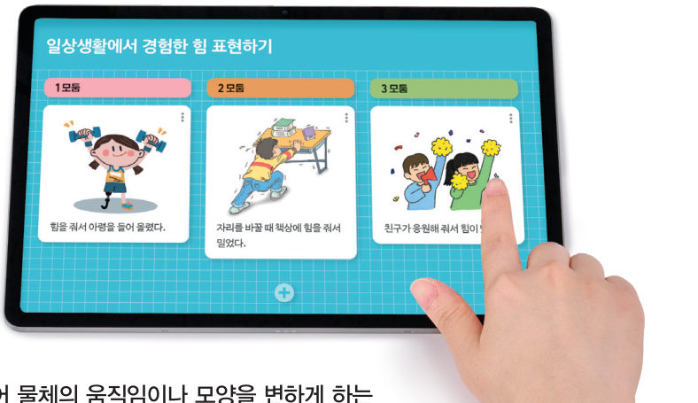
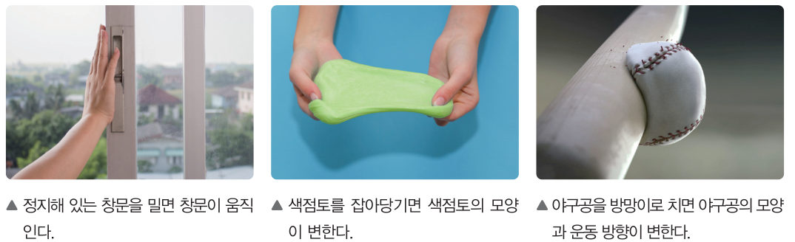
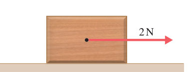

“‘힘’을 너무 세게 줬나 봐.” “괜찮아. ‘힘’ 내!” 두 ‘힘’은 같은 뜻일까? 과학에서 말하는 힘의 뜻을 알아보고, 가상 컬링 경기장에서 힘의 작용점·방향·크기를 화살표로 나타내 보자.
🎯 이 단원을 배우면 — 힘의 뜻을 설명하고, 물체에 작용하는 힘을 화살표를 이용하여 표현할 수 있다.
중단원 열기첫 번째 블록 질문 157쪽
바닷물 속에 들어가면 몸이 저절로 물 위로 뜨려고 해. 하지만 스쿠버 다이버는 물속 깊이 들어갈 수 있대.
첫 번째 블록
스쿠버 다이버가 물 아래로 내려갈 수 있는 까닭은 무엇일까?
‘힘을 표현하는 방법’(158쪽)과 ‘나란한 두 힘의 합력과 평형’(160쪽)의 블록을 모으면 답할 수 있어요. 🧩
✓이미 알고 있는 것 — 물체가 무거울수록 물체를 밀거나 당겨 움직이려면 힘이 필요하다.
해 보기일상생활에서 경험한 힘 표현하기 158쪽
과학에서의 힘은 무엇일까?
우리는 일상생활에서 ‘힘을 내.’, ‘힘을 주어 책상을 밀었어.’와 같이 ‘힘’이라는 말을 다양한 뜻으로 사용한다. 일상생활에서 말하는 힘의 다양한 뜻 중 과학에서의 힘은 무엇인지 알아보자.

158쪽일상생활에서 경험한 힘을 모둠별로 글과 그림으로 표현하여 공유한다.
1힘을 주어 물체의 움직임이나 모양을 변하게 하는 경우(과학에서의 힘)를 모두 골라 보자.
2🧑🤝🧑 우리 모둠이 경험한 힘을 글로 표현하고, 그것이 과학에서의 힘인지 판단해 보자.
교과서과학에서의 힘 159쪽
물체에 힘이 작용하면 그림 5-1과 같이 물체의 ●운동 상태나 모양이 변한다. 이와 같이 과학에서는 물체의 운동 상태나 모양을 변하게 하는 원인을 힘이라고 한다. 힘의 크기를 나타내는 단위는 N(뉴턴)을 사용하고, 용수철저울이나 힘 센서 등을 이용하여 힘의 크기를 측정할 수 있다.
●운동 상태: 물체의 속력이나 운동 방향을 뜻한다.

그림 5-1힘의 효과 — 창문을 밀면 움직인다 / 색점토를 잡아당기면 모양이 변한다 / 야구공을 방망이로 치면 모양과 운동 방향이 변한다
축구를 할 때 축구공이 움직이는 방향은 축구공을 차는 방향에 따라 달라진다. 또 축구공을 세게 찰수록 축구공이 빠르게 움직인다. 따라서 물체에 작용하는 힘을 표현할 때는 ●힘이 작용하는 지점에서 힘의 방향과 크기를 함께 나타내어야 한다. 힘은 그림 5-2와 같이 화살표를 이용하여 나타낼 수 있다. 이때 화살표의 방향은 힘이 작용하는 지점에서 시작하여 힘이 작용하는 방향으로 나타내고, 화살표의 길이는 힘의 크기에 비례하도록 나타낸다.
●힘의 3요소: 힘의 작용점, 힘의 방향, 힘의 크기
움직이는 그림 5-2가상 컬링 경기장 — 화살표로 힘 주기
스톤(돌) 위에서 드래그하면 힘의 화살표가 그려져요. 시작점은 작용점, 화살표의 방향은 힘의 방향, 길이는 힘의 크기예요(모눈 1칸 = 1 N). [밀기]를 누르면 스톤이 그 힘을 받아 움직여요. 과녁 가운데에 멈추게 해 보자!
힘의 크기0 N
힘의 방향-
과녁 중심까지-
1화살표를 길게 그릴수록 스톤은 . 화살표의 방향을 바꾸면 스톤이 움직이는 이/가 바뀐다.
연습힘을 화살표로 나타내기
각 과제에 맞게 상자의 빨간 점(작용점)에서 드래그하여 화살표를 그려 보자. 모눈 1칸 = 1 N이고, 위쪽이 북쪽, 오른쪽이 동쪽이에요. 화살표는 모눈 칸에 맞춰져요.
내가 그린 화살표: ①: - / ②: - / ③: -
💭사고력 그림은 물체에 오른쪽으로 작용하는 2 N의 힘을 화살표로 나타낸 것이다. 같은 지점에서 물체에 왼쪽으로 작용하는 1 N의 힘은 어떻게 나타내야 하는지 설명해 보자.

스스로 확인하기158쪽 학습 목표를 달성했는지 확인해 보자 159쪽
1개념 확인 과학에서는 물체의 ( )(이)나 ( )을/를 변하게 하는 원인을 힘이라고 한다.
🧩 첫 번째 블록 · 힌트 조각 1 (159쪽)
스쿠버 다이버에게 ( )이/가 작용하면 스쿠버 다이버의 운동 상태가 변한다. → 다음 조각은 ‘합력과 평형’에서!
5분 테스트힘을 표현하는 방법
1힘의 크기는 과 힘 센서 등을 이용해 측정할 수 있다. 힘의 단위는 (N)이다.
2과학에서의 힘이면 O, 아니면 X를 골라 보자. ④ 아는 것이 힘이다. ⑤ 축구공을 발로 힘주어 찼다. ⑥ 아침을 굶었더니 힘이 없다.
3아래 그림에서 A(시작점), B(화살표의 길이), C(화살촉이 향하는 쪽)는 각각 무엇을 나타낼까?
A → B → C → 이 화살표가 나타내는 힘: , N (모눈 1칸 = 1 N)
스스로 정리하기힘의 표현 162쪽
1힘의 표현
(1) 과학에서의 힘: 물체의 (이)나 모양을 변하게 하는 원인 (2) 힘의 단위: (3) 힘의 표현: 힘은 화살표를 이용하여 나타낼 수 있다. 화살표의 시작점은 힘의 , 화살표의 방향은 힘의 방향, 화살표의 길이는 힘의 크기를 나타낸다.
제출학생 정보 · 제출하기
모든 활동을 마친 뒤 제출하면 전체가 한 번에 채점되고 피드백이 나타나요. 답안은 선생님 스프레드시트(중1 탭)에 기록돼요.